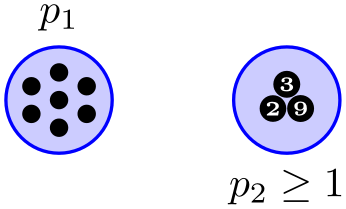
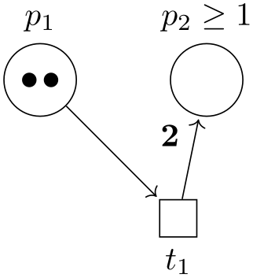
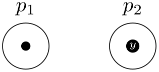
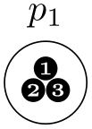
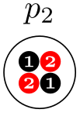
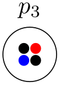
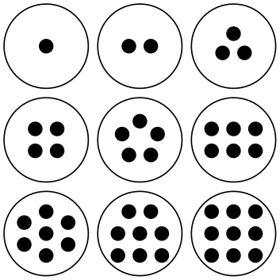
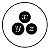
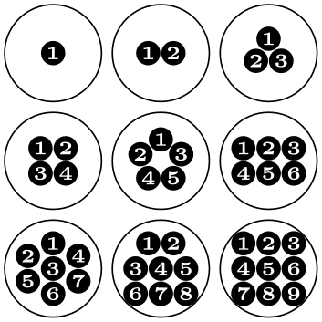
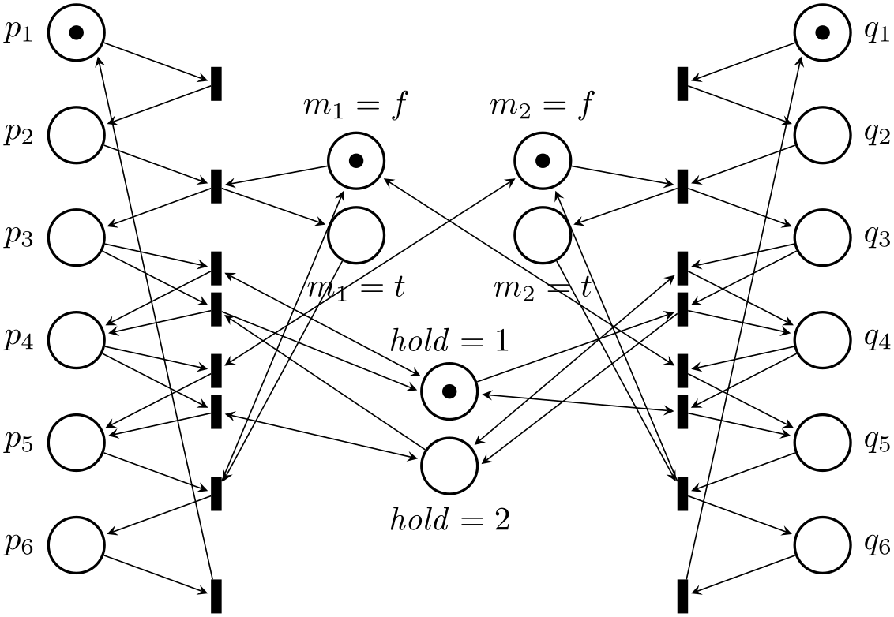

The TikZ and PGF Packages
Manual for version 3.1.10
Libraries
64 Petri-Net Drawing Library¶
-
TikZ Library petri ¶
\usetikzlibrary{petri} %
LaTeX
and plain
TeX
\usetikzlibrary[petri] %
ConTeXt
This packages provides shapes and styles for drawing Petri nets.
64.1 Places¶
The package defines a style for drawing places of Petri nets.
-
/tikz/place(style, no value) ¶
-
/tikz/every place(style, no value) ¶
This style indicates that a node is a place of a Petri net. Usually, the text of the node should be empty since places do not contain any text. You should use the label option to add text outside the node like its name or its capacity. You should use the tokens options, explained in Section 64.3, to add tokens inside the place.

This style is evoked by the style place. To change the appearance of places, you can change this style.

\usetikzlibrary {petri,positioning}
\begin{tikzpicture}
[every place/.style={draw=blue,fill=blue!20,thick,minimum size=9mm}]
\node[place,tokens=7,label=above:$p_1$] (p1) {};
\node[place,structured tokens={3,2,9},
label=below:$p_2\ge1$,right=of p1] (p2) {};
\end{tikzpicture}
64.2 Transitions¶
Transitions are also nodes. They should be drawn using the following style:
-
/tikz/transition(style, no value) ¶
-
/tikz/every transition(style, no value) ¶
-
/tikz/pre(style, no value) ¶
-
/tikz/post(style, no value) ¶
-
/tikz/pre and post(style, no value) ¶
This style indicates that a node is a transition. As for places, the text of a transition should be empty and the label option should be used for adding labels.
To connect a transition to places, you can use the edge command as in the following example:

This style is evoked by the style transition.
This style can be used with paths leading from a transition to a place to indicate that the place is in the pre-set of the transition. By default, this style is <-,shorten <=1pt, but feel free to redefine it.
This style is also used with paths leading from a transition to a place, but this time the place is in the post-set of the transition. Again, feel free to redefine it.
This style is to be used to indicate that a place is both in the pre- and post-set of a transition.
64.3 Tokens¶
Interestingly, the most complicated aspect of drawing Petri nets in TikZ turns out to be the placement of tokens.
Let us start with a single token. They are also nodes and there is a simple style for typesetting them.
-
/tikz/token(style, no value) ¶
-
/tikz/every token(style, no value) ¶
This style indicates that a node is a token. By default, this causes the node to be a small black circle. Unlike places and transitions, it does make sense to provide text for the token node. Such text will be typeset in a tiny font and in white on black (naturally, you can easily change this by setting the style every token).

Change this style to change the appearance of tokens.
In the above example, it is bothersome that we need an extra command for the token node. Worse, when we have two tokens on a node, it is difficult to place both nodes inside the node without overlap.
The Petri library offers a solution to this problem: The children are tokens style.
-
/tikz/children are tokens(style, no value) ¶
-
/tikz/token distance=⟨distance⟩(no default) ¶
The idea behind this style is to use trees mechanism for placing tokens. Every token lying on a place is treated as a child of the node. Normally this would have the effect that the tokens are placed below the place and they would be connected to the place by an edge. The children are tokens style, however, redefines the growth function of trees such that it places the children next to each other inside (or, rather, on top) of the place node. Additionally, the edge from the parent node is not drawn.

\usetikzlibrary {petri}
\begin{tikzpicture}
\node[place,label=above:$p_1$] {}
[children are tokens]
child
{node
[token] {1}}
child
{node
[token] {2}}
child
{node
[token] {3}};
\end{tikzpicture}
In detail, what happens is the following: Tree growth functions tell TikZ where it should place the children of nodes. These functions get passed the number of children that a node has an the number of the child that should be placed. The special tree growth function for tokens has a special mapping for each possible number of children up to nine children. This mapping decides for each child where it should be placed on top of the place. For example, a single child is placed directly on top of the place. Two children are placed next to each other, separated by the token distance. Three children are placed in a triangle whose side lengths are token distance; and so on up to nine tokens. If you wish to place more than nice tokens on a place, you will have to write your own placement code.

This specifies the distance between the centers of the tokens in the arrangements of the option children are tokens.

\usetikzlibrary {petri}
\begin{tikzpicture}
\node[place,label=above:$p_3$] {}
[children are tokens,token distance=1.1ex]
child
{node
[token] {}}
child
{node
[token,red] {}}
child
{node
[token,blue] {}}
child
{node
[token] {}};
\end{tikzpicture}
The children are tokens option gives you a lot of flexibility, but it is a bit cumbersome to use. For this reason there are some options that help in standard situations. They all use children are tokens internally, so any change to, say, the every token style will affect how these options depict tokens.
-
/tikz/tokens=⟨number⟩(no default) ¶
This option is given to a place node, not to a token node. The effect of this option is to add ⟨number⟩ many child nodes to the place, each having the style token. Thus, the following two pieces of codes have the same effect:

It is legal to say tokens=0, no tokens are drawn in this case. This option does not handle ten or more tokens correctly. If you need this many tokens, you will have to program your own code.

\usetikzlibrary {petri}
\begin{tikzpicture}[every place/.style={minimum size=9mm}]
\foreach \x/\y/\tokennumber in
{0/2/1,1/2/2,2/2/3,
0/1/4,1/1/5,2/1/6,
0/0/7,1/0/8,2/0/9}
\node [place,tokens=\tokennumber] at
(\x,\y) {};
\end{tikzpicture}
-
/tikz/colored tokens=⟨color list⟩(no default) ¶
This option, which must also be given when a place node is being created, gets a list of colors as parameter. It will then add as many tokens to the place as there are colors in this list, each filled correspondingly.
\usetikzlibrary {petri}
\tikz \node[place,colored tokens={black,black,red,blue}] {};
-
/tikz/structured tokens=⟨token texts⟩(no default) ¶
This option, which must again be passed to a place, gets a list of texts for tokens. For each text, a new token will be added to the place.

\usetikzlibrary {petri}
\tikz \node[place,structured tokens={$x$,$y$,$z$}] {};

\usetikzlibrary {petri}
\begin{tikzpicture}[every place/.style={minimum size=9mm}]
\foreach \x/\y/\tokennumber in
{0/2/1,1/2/2,2/2/3,
0/1/4,1/1/5,2/1/6,
0/0/7,1/0/8,2/0/9}
\node [place,structured tokens={1,...,\tokennumber}] at
(\x,\y) {};
\end{tikzpicture}
If you use lots of structured tokens, consider redefining the every token style so that the tokens are larger.
64.4 Examples¶

\usetikzlibrary {petri}
\begin{tikzpicture}[yscale=-1.6,xscale=1.5,thick,
every transition/.style={draw=red,fill=red!20,minimum size=3mm},
every place/.style={draw=blue,fill=blue!20,minimum size=6mm}]
\foreach \i in
{1,...,6} {
\node[place,label=left:$p_\i$] (p\i) at
(0,\i) {};
\node[place,label=right:$q_\i$] (q\i) at
(8,\i) {};
}
\foreach \name/\var/\vala/\valb/\height/\x in
{m1/m_1/f/t/2.25/3,m2/m_2/f/t/2.25/5,h/\mathit{hold}/1/2/4.5/4} {
\node[place,label=above:{$\var =
\vala$}] (\name\vala) at
(\x,\height) {};
\node[place,yshift=-8mm,label=below:{$\var =
\valb$}] (\name\valb) at
(\x,\height) {};
}
\node[token] at
(p1) {}; \node[token] at
(q1) {};
\node[token] at
(m1f) {}; \node[token] at
(m2f) {};
\node[token] at
(h1) {};
\node[transition] at
(1.5,1.5) {} edge
[pre] (p1) edge
[post] (p2);
\node[transition] at
(1.5,2.5) {} edge
[pre] (p2) edge[pre] (m1f)
edge
[post](p3) edge[post] (m1t);
\node[transition] at
(1.5,3.3) {} edge
[pre] (p3) edge
[post] (p4)
edge
[pre and post] (h1);
\node[transition] at
(1.5,3.7) {} edge
[pre] (p3) edge
[pre] (h2)
edge
[post] (p4) edge
[post] (h1.west);
\node[transition] at
(1.5,4.3) {} edge
[pre] (p4) edge
[post] (p5)
edge
[pre and post] (m2f);
\node[transition] at
(1.5,4.7) {} edge
[pre] (p4) edge
[post] (p5)
edge
[pre and post] (h2);
\node[transition] at
(1.5,5.5) {} edge
[pre] (p5) edge
[pre] (m1t)
edge
[post] (p6) edge
[post] (m1f);
\node[transition] at
(1.5,6.5) {} edge
[pre] (p6) edge
[post] (p1.south east);
\node[transition] at
(6.5,1.5) {} edge
[pre] (q1) edge
[post] (q2);
\node[transition] at
(6.5,2.5) {} edge
[pre] (q2) edge
[pre] (m2f)
edge
[post] (q3) edge
[post] (m2t);
\node[transition] at
(6.5,3.3) {} edge
[pre] (q3) edge
[post] (q4)
edge
[pre and post] (h2);
\node[transition] at
(6.5,3.7) {} edge
[pre] (q3) edge
[pre] (h1)
edge
[post] (q4) edge
[post] (h2.east);
\node[transition] at
(6.5,4.3) {} edge
[pre] (q4) edge
[post] (q5)
edge
[pre and post] (m1f);
\node[transition] at
(6.5,4.7) {} edge
[pre] (q4) edge
[post] (q5)
edge
[pre and post] (h1);
\node[transition] at
(6.5,5.5) {} edge
[pre] (q5) edge
[pre] (m2t)
edge
[post] (q6) edge
[post] (m2f);
\node[transition] at
(6.5,6.5) {} edge
[pre] (q6) edge
[post] (q1.south west);
\end{tikzpicture}
Here is the same net once more, but with these styles changes:
\begin{tikzpicture}[yscale=-1.1,thin,>=stealth,
every transition/.style={fill,minimum width=1mm,minimum height=3.5mm},
every place/.style={draw,thick,minimum size=6mm}]
